01키워드
2026년 IT 수험서 10종 담당,
그 독자가 쓰는 CBT까지 직접 개발
골든래빗에서 2026년 IT 자격증 수험서 10종의 기획·편집을 맡아, ADsP·SQLD·빅데이터분석기사(필기)·
AICE ASSOCIATE·리눅스마스터 2급·ITQ OA Master 6종을 인쇄까지 진행해 출간했고
나머지는 진행 중입니다. 같은 기간 그 책의 독자들이 쓰는 CBT·자동 채점 서비스를
기획해 직접 개발했습니다. 개발 경험 없이 시작했지만, "독자에게 필요한가"를 기준으로
삼으면 편집과 개발 사이에 선을 그을 이유가 없었습니다.채점 정확도 30% → 95%,
원인은 코드 단위로 추적
정답을 쓴 답안까지 오답으로 처리되던 자동 채점기를 보고 "이상하다"에서 멈추지 않았습니다.
파일의 셀 구조를 하나하나 분석해 버그 6건을 규명하고, 우선순위 로드맵을 세워
실제 서비스에 반영했습니다. 원고를 여러 교(校)에 걸쳐 검수하던 편집자의 습관은
코드와 데이터 앞에서도 똑같이 동작합니다.협업의 기준은 기억이 아니라 문서.
작업 시간 15% 단축
집필진·디자이너·검토진이 동시에 참여하는 교과서 프로젝트에서 업무 요청과 피드백을
문서로 남겨 혼선을 막았고, 반복되는 수정 사항을 FAQ로 정리해 작업 시간을 15% 이상
줄였습니다. 지금은 기획·원고·조판대조·1~3교·리파인 7단계 출간 프로세스를 표준
문서로 정리해, 담당자가 바뀌어도 같은 기준으로 진행되도록 사내 가이드에 반영했습니다.02소개
Career
- 2025.11 ~골든래빗 수험서기획편집팀 · 프로
- 2022.04 ~ 2025.02(주)와이비엠 편집2국 · 대리
- 2021.01 ~ 2022.04자유아카데미 편집부 · 사원
- 2020.09 ~ 2020.12효성ITX(주) 공공데이터 청년인턴
Education · Certificate
- 2021.02동국대학교 응용통계학과 졸업
- 2020.12ADsP 데이터분석준전문가
Tool & Skill
03경력
재직중
(주)골든래빗
수험서기획편집팀 · 프로 (IT 수험서 기획·편집, CBT·채점서비스 기획·개발)
- 2026년 IT 자격증 수험서 10종 기획·편집 담당. ADsP, SQLD, 빅데이터분석기사(필기), AICE ASSOCIATE, 리눅스마스터 2급, ITQ OA Master 6종 출간, 나머지 4종 진행 중
- 계약·기획 단계 포함 20종 이상의 IT 자격증 수험서 라인업을 팀과 함께 관리하며 표준 편집 프로세스 문서화 담당
- 도서 구매자 대상 CBT·채점서비스 웹 플랫폼 기획 및 개발
2025.02
(주)와이비엠
편집2국 정보과·실과·초등수학콘텐츠과 · 대리
- 2022 개정 교육과정 고등학교 <데이터 과학> 교과서 책임 편집·기획 (기여도 100%)
- <Brightics Studio와 함께 배우는 데이터 과학> 기획 편집 (학교 현장 연계 콘텐츠)
- 초등학교 실과(5~6학년군) 정보 단원, 중·고등 정보·인공지능 기초 교과서 서브 편집 및 저자 관리
- 정보·수학 교과 AIDT(AI 디지털교과서) 개발 참여
- 교정 단계에서 반복되는 수정 사항을 FAQ 문서로 정리해 공유, 불필요한 반복 논의를 줄여 작업 시간 15% 이상 단축
2022.04
자유아카데미
편집부 통계학 서적 편집자 · 사원
- <기초 통계학>, <실험 설계>, <Montgomery 실험설계 10판> 등 통계·수학·AI 전공서 편집
- IT·인공지능 관련 영문 원서 번역본 검수, 출판 계약·인쇄 검수 관리
2020.12
효성ITX(주)
IT지원부서 · 인턴 (한국수력원자력 공공데이터 청년인턴)
- 공공데이터 개방·정제, 품질 진단, 민원 응대
04프로젝트
전공서자유아카데미 · 2021–2022
No. 01통계·수학·AI 전공서 편집
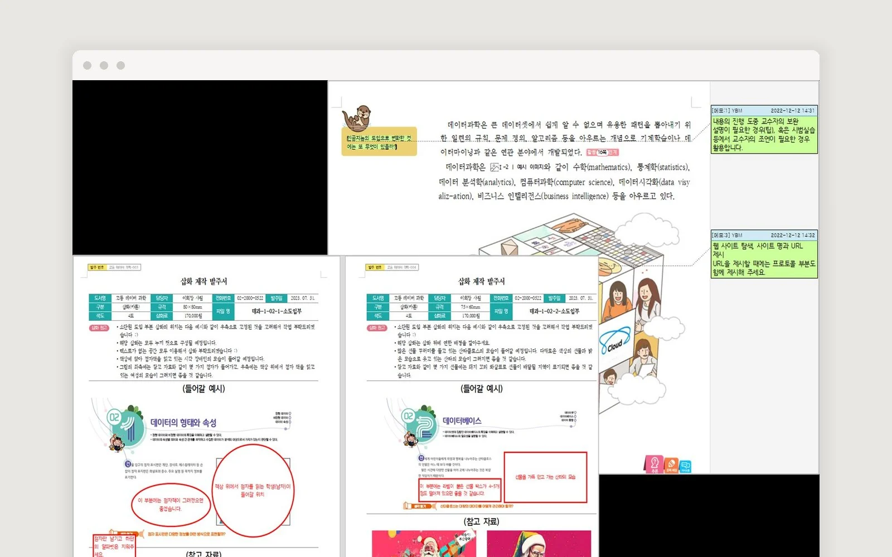
No. 02고등학교 〈데이터 과학〉 교과서
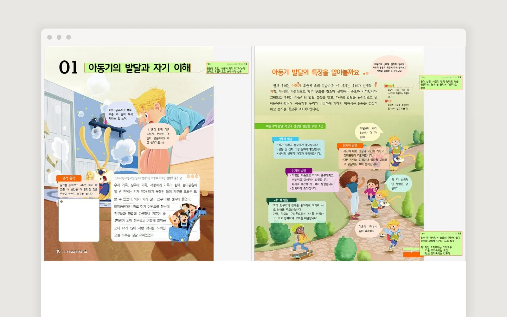
No. 03초등학교 실과(5~6학년군) 정보 단원
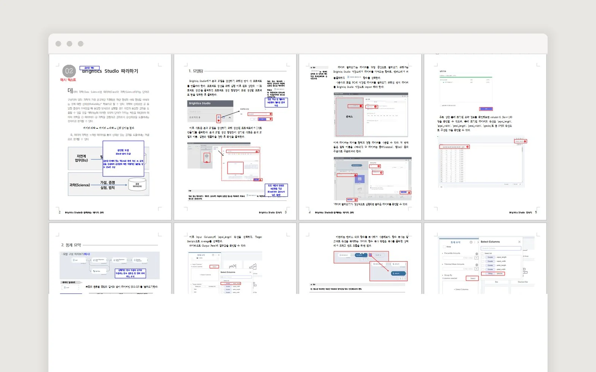
No. 04Brightics Studio와 함께 배우는 데이터 과학
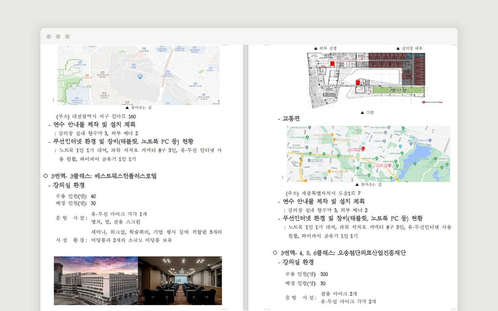
No. 05교실혁명 선도교사 양성 연수 수행기관 공모
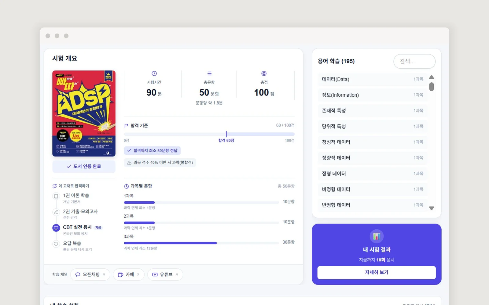
No. 06CBT·채점서비스 기획부터 개발까지
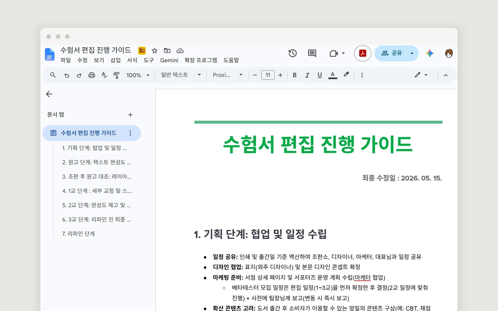
No. 072026년 수험서 10종 담당과 20종 파이프라인 운영
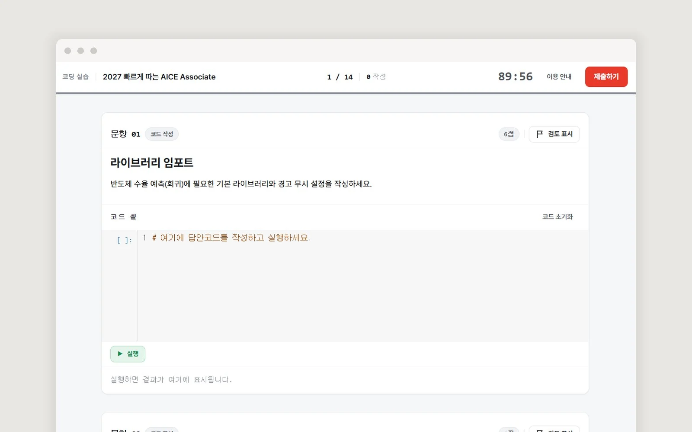
No. 08AICE 자동 채점기 정확도 30% → 95%
프로젝트 상세
통계·수학·AI 전공서 편집
Overview
동국대학교 응용통계학과 전공 지식을 살려 통계·수학·AI 분야 전공 서적을 편집했습니다. 원고부터 인쇄 직전 검수까지 출간 전 과정을 담당했습니다.
Role
- <기초 통계학>, <실험 설계>, <통계학 개론>, <품질관리>, <탐색적 데이터 분석> 등 통계학과 전공 서적 편집
- <통계 수학>, <제약 수학>, <선형대수의 이해> 등 수학 서적 편집
- <Stable Baseline을 활용한 강화 학습>, <텐서플로와 케라스를 이용한 딥러닝> 등 AI 실습서 편집
- <Montgomery 실험설계와 분석 제10판> 등 영문 원서 번역본 편집 및 원문 대조 검수
- 재단·표지·본문 인쇄 상태 검수, 출판 계약서 관리
Result
2022 개정 교육과정 고등학교 <데이터 과학>
Overview
2022 개정 교육과정에 새롭게 도입된 고등학교 데이터 과학 교과서의 책임 편집을 담당해 교육과정 분석부터 최종 인정 도서 제출까지 전 과정을 주도적으로 수행했습니다.
Role
- 신설 교과목 특성상 철저한 교육과정 분석 및 유사 교과용도서 탐색
- 교과서 체제 구상·내지 디자인 발주, 단원 편제(안)·집필 세목(안) 작성 후 집필진 협의
- 원고 편집·삽화 발주, 삽화·컷·조판소 등 외주 인력 관리
- 지역별 현장 검토·전문 위원 검토 회의 준비, 인정 도서 제출 제반 서류, 지도서·전자저작물 후속 작업
- 교과서 소개 PT·홍보 자료 제작, 집필진 관리
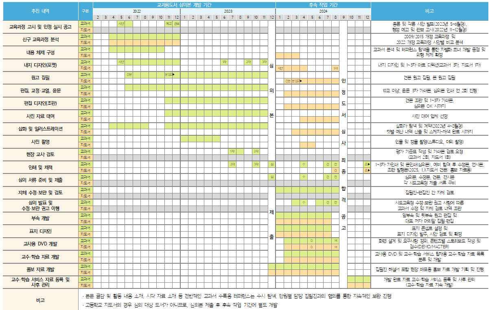
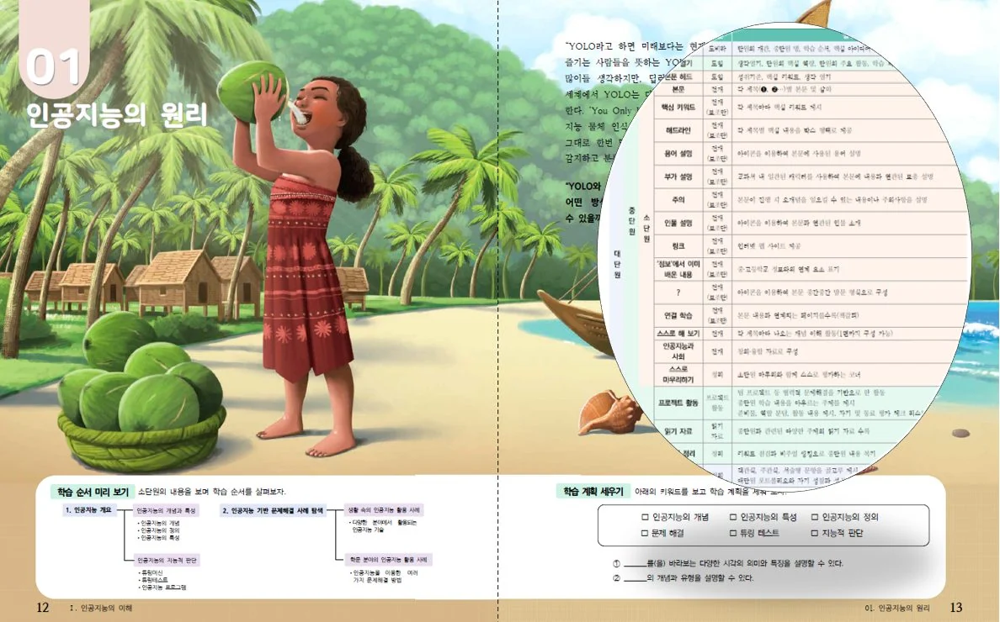
내지 디자인 발주를 위해 직접 작성한 교과서 체제 문서
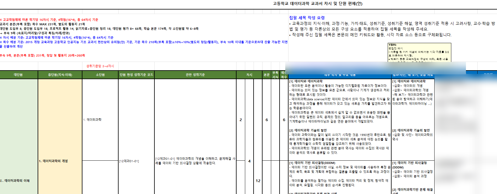
단원 편제·집필 세목(안) 작성 후 집필진과 논의
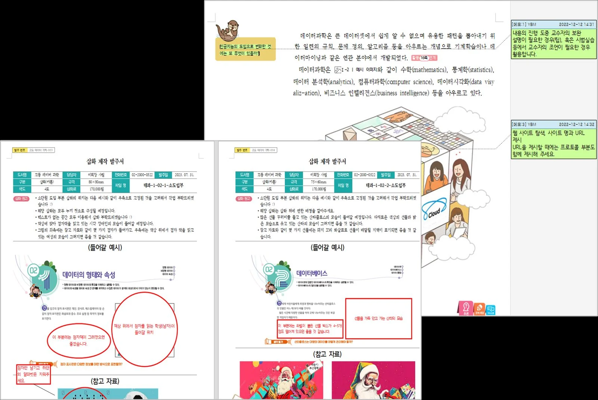
원고 편집 및 삽화 발주
Result
2022 개정 교육과정 초등학교 실과(5~6학년군)
Overview
초등학교 검정 교과서 개발 사업에 참여해 5~6학년군 실과 교과서의 정보 파트 개발을 담당했습니다. 2022 개정 교육과정에 맞춰 교과서와 지도서를 개발하고 검정 심사를 위한 제반 업무를 수행했으며, 학생들의 디지털 리터러시 함양을 위한 콘텐츠 개발에 주력했습니다.
Role
- 5·6학년 정보 파트 교과서·지도서 전반 담당, 원고 편집
- 내지 디자인 브리프·발주서 작성
- 정보 파트 자문위원 모집, 교수·학습 자료 개발 저자 탐색
- 외주 인력 관리 및 계약서 작성, 검정 교과서 제출 제반 서류 작성
Result
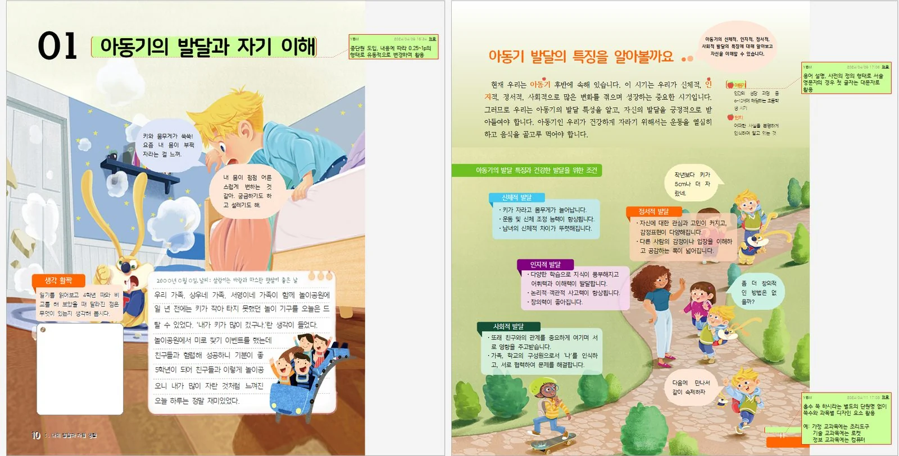
교과서 내지 교정 지면. 도입 구성·용어 설명 방식 등 편집 방향을 코멘트로 조율
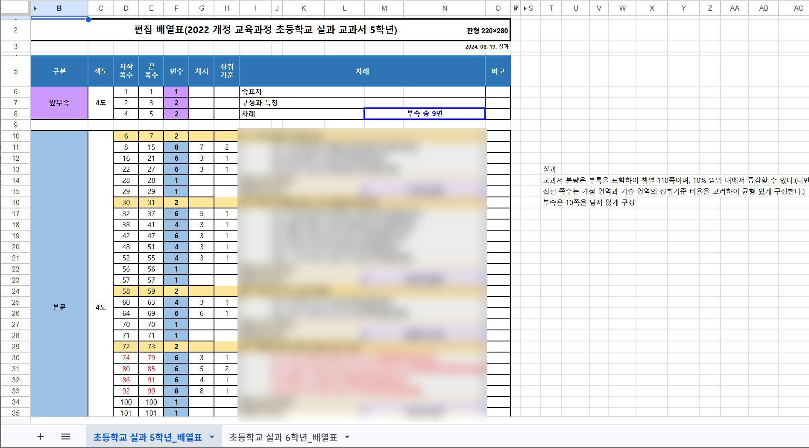
직접 관리한 편집 배열표. 단원별 쪽수·차시·성취기준을 한눈에 관리
<Brightics Studio와 함께 배우는 데이터 과학>
Overview
고등학교 <데이터 과학> 교과서의 판매 기여와 홍보를 위해 기획한 단행본입니다. 교육용 논코딩 도구로 많이 쓰이는 Orange가 외국산 도구라는 언어적 한계가 있고, 교과용도서에 국내 개발 자료 활용이 권장되는 흐름에 맞춰 'Brightics Studio' 학습서 시장을 선점하고자 기획했습니다.
Role
- 기획안 작성 전담 (교과서와 연계한 시장성 분석 포함)
- 단행본 체제 및 초안 작성 전담
- 외주 편집 인력 관리, 계약 기간 내 활용 계획 수립, 편집 규칙·디자인 틀 사전 숙지, 크로스 체크와 내용 검수, 전체 맥락과 일관성을 고려한 피드백·가이드라인 제시
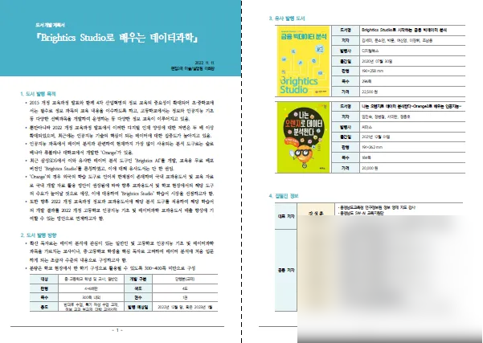
직접 작성한 단행본 기획안
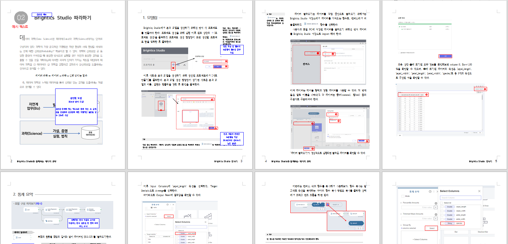
단행본 체제 및 초안 작성
Result
교실혁명 선도교사 양성 연수 수행기관 공모 신청
Overview
한국교육학술정보원(KERIS)의 '교실혁명 선도교사 양성 연수 수행기관' 사업 참여를 위한 제반 서류 작성 및 발표 자료 제작을 담당했습니다.
Role
- 연수 환경 사전 점검 사항을 포함한 전체 연수 환경 기술, 원격 연수와 1·3·6 권역별 현장 연수 운영 일정, 원격 연수 장비 현황 파악
- 연수생 사전 안내부터 결과 처리까지 단계별 운영 계획 작성, 분반·모둠 구성(교과·학교급 고려), 연수 활동 지원, 이수증 부여, 산출물·만족도 관리
- 공모 발표 자료 제작
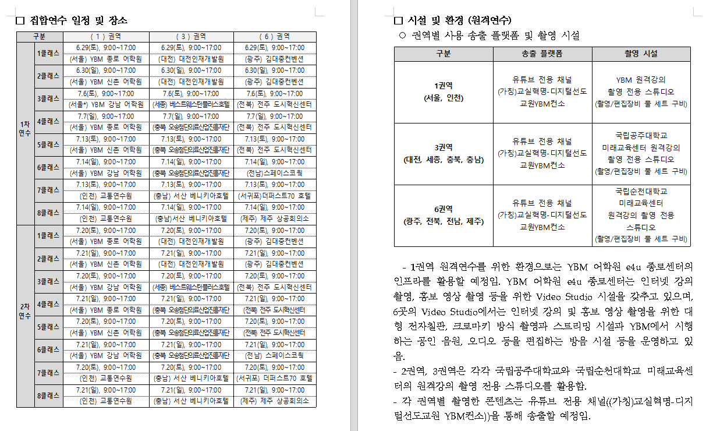
권역별 집합연수 일정과 원격연수 송출 플랫폼·촬영 시설 현황 정리
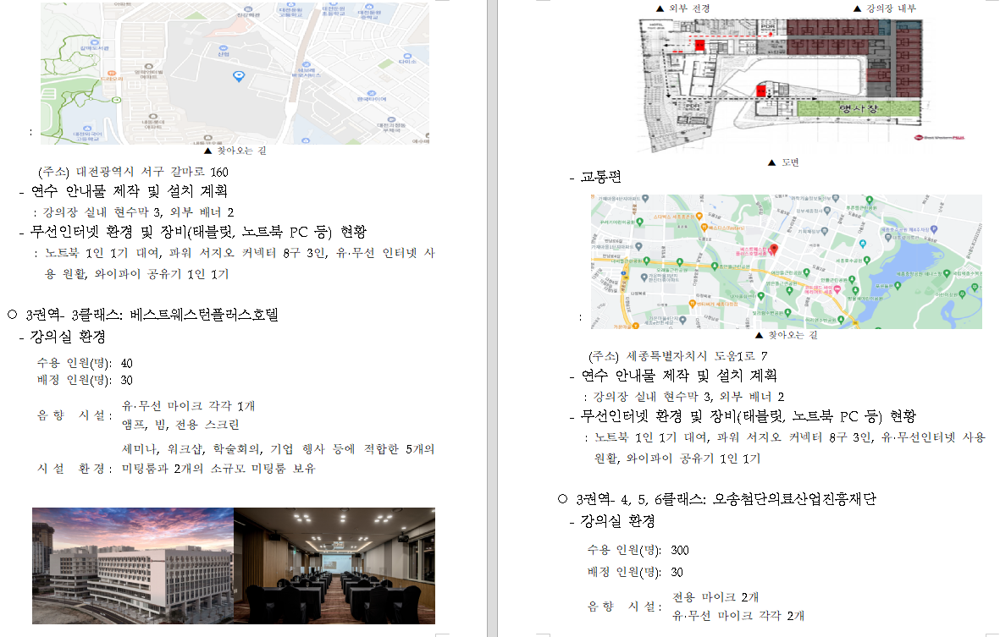
제안서에서 연수 환경을 지도·도면·사진으로 구체적으로 제시
Result
CBT·채점서비스 기획부터 개발까지
Overview
도서 구매자가 책으로 공부한 내용을 실제 시험처럼 확인할 수 있도록, 온라인 모의고사(CBT)와 실기 자동 채점 서비스를 기획하고 AI 코딩 도구를 활용해 직접 구현·운영하고 있습니다.
Role
- 경쟁 서비스 벤치마킹 후 사이트 전체 정보구조(IA) 설계
- 객관식 모의고사(CBT) 10종, 실기·작업형 자동 채점 4종의 응시 흐름과 채점 규칙 설계
- 시험 목록·상세·응시 화면의 모바일 대응 전면 재정비, 페이지마다 제각각이던 기준을 하나의 공용 로직으로 통일
- 채점 기준 변경 시 과거 응시자 점수를 한 번에 재계산하는 관리자 기능, 자동 검증 스크립트·pre-commit lint 도입
Result
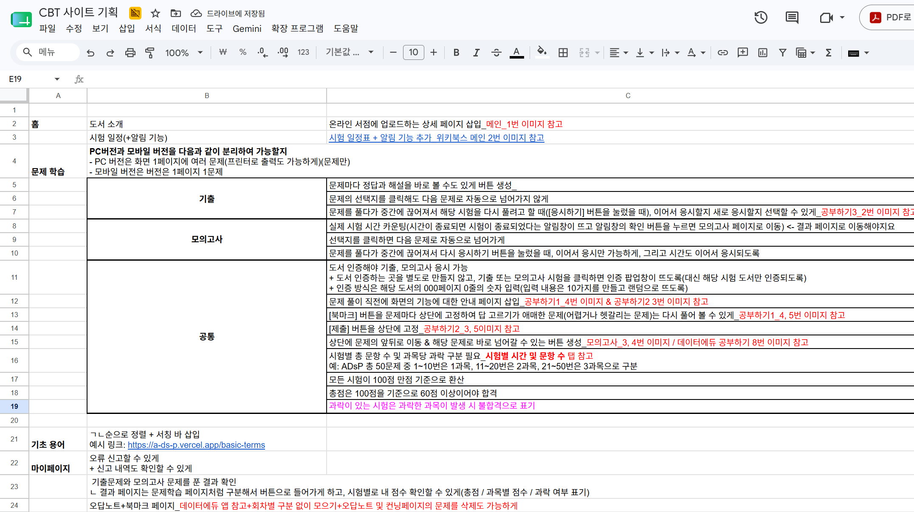
직접 작성한 CBT 사이트 기획 시트. 페이지별 기능 요구사항과 채점 규칙을 정의
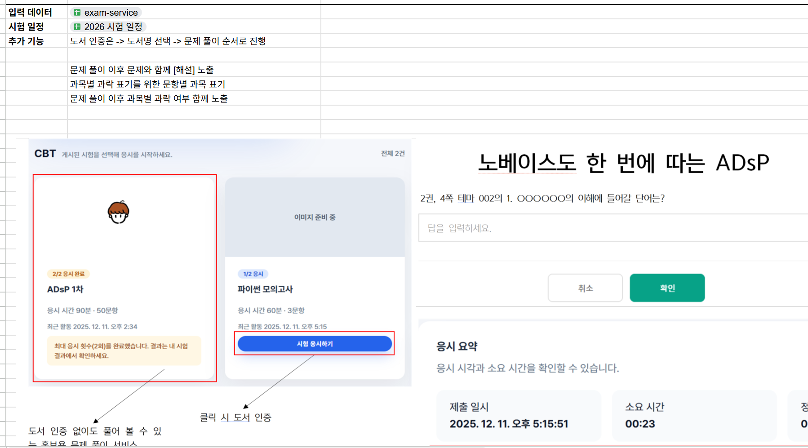
기획 단계에서 화면 프로토타입에 도서 인증 동선·응시 흐름을 주석으로 잡은 검토 자료
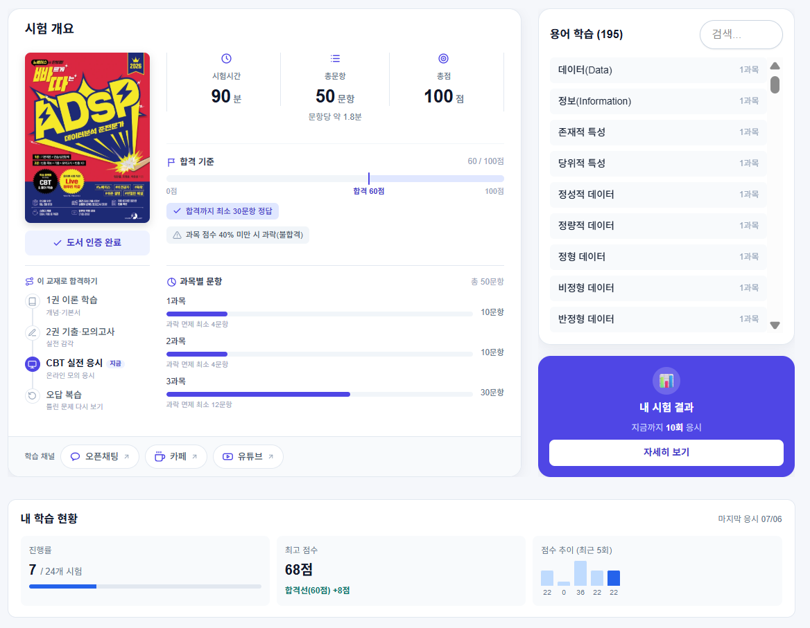
실제 서비스의 시험 개요 화면
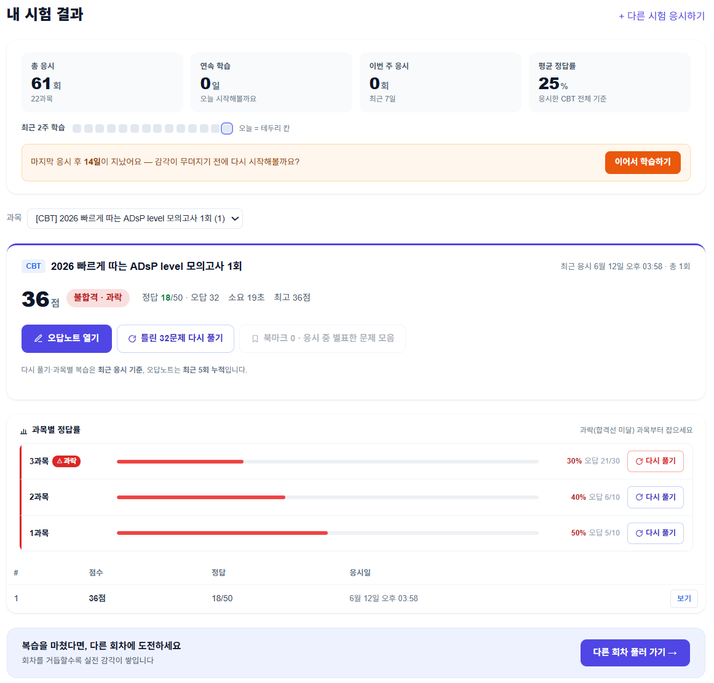
응시 결과 대시보드
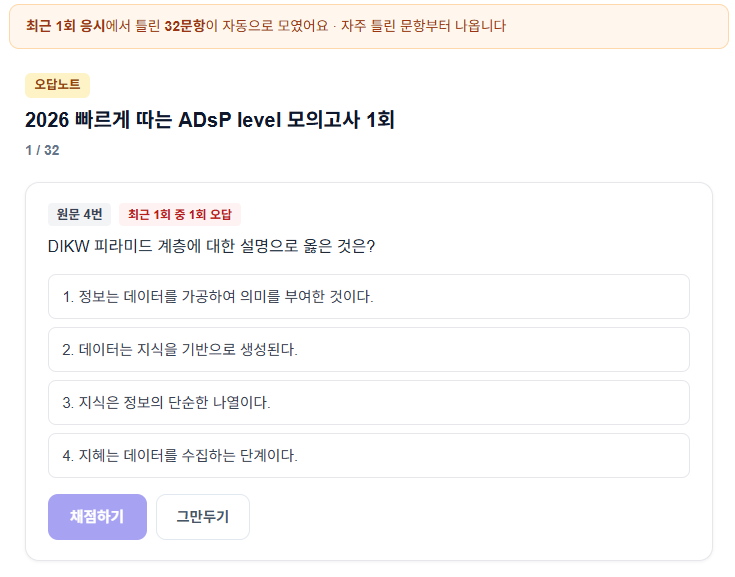
오답노트 화면
2026년 수험서 10종 담당과 20종 파이프라인 운영
Overview
2026년 IT 자격증 수험서 10종의 기획·편집을 맡고 있습니다. 이 중 입사 후 약 7개월 만에 ADsP, SQLD, 빅데이터분석기사(필기), AICE ASSOCIATE, 리눅스마스터 2급, ITQ OA Master 6종을 기획부터 인쇄까지 진행해 출간했고, 나머지 4종은 진행 중입니다. 각 책은 CBT 또는 자동 채점서비스와 연동됩니다.
Role
- 기획 → 원고 → 조판대조 → 1교 → 2교 → 3교 → 리파인 표준 편집 프로세스를 직접 문서화해 사내 가이드로 정착
- 저자 섭외·요청사항 관리, 원고 피드백 루프, 베타테스터 모집·검토 운영
- 유튜브 크리에이터 협업, 블로그 서평단, SNS 캠페인 등 마케팅 기획 및 실행
Result
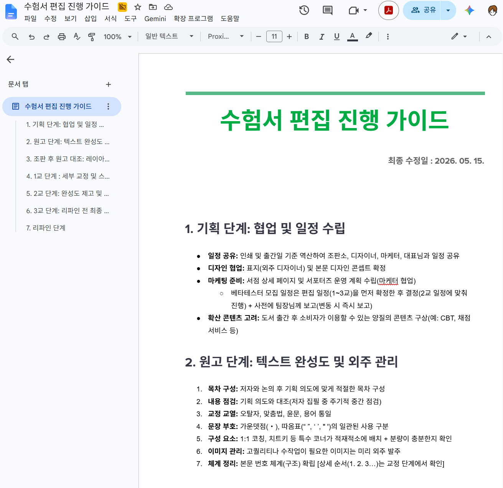
직접 문서화한 수험서 편집 진행 가이드. 기획·원고·조판대조·1~3교·리파인 7단계별 체크리스트
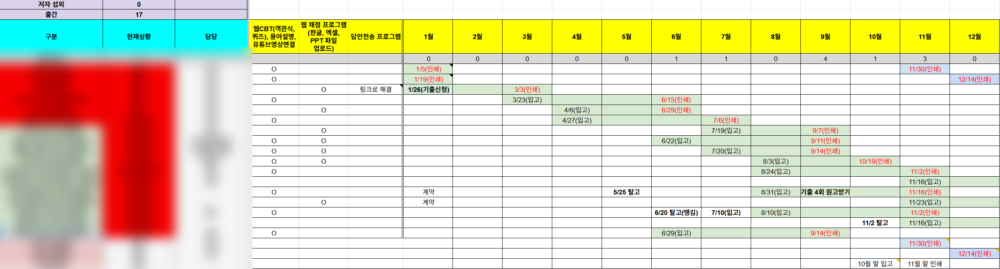
전체 라인업 연간 진행 현황표. 종별 CBT·채점 연동 여부와 탈고·입고·인쇄 일정을 한눈에 관리
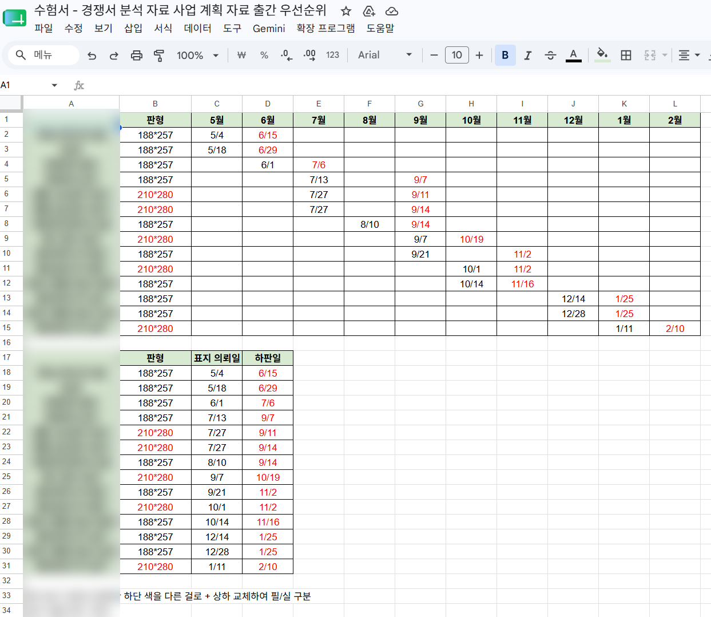
출간 우선순위와 판형·표지 의뢰일·하판일 관리 시트
AICE 자동 채점기 버그를 찾고 고친 이야기
Overview
AICE ASSOCIATE 자동 채점기 초기 버전을 실제 기출 문제·답안 파일로 테스트하던 중, 정답이 포함된 답안조차 상당수 문항이 오답으로 처리되어 채점 정확도가 30%에 그치는 문제를 발견했습니다.
Role
- 문제지·답지 파일의 셀 구조를 단위별로 직접 분석해 원인 추적
- 셀 탐지 패턴 불일치, 빈칸형 문제 미인식, 정답 키 누락 등 치명적 버그 6건 규명
- 채점 결과 화면 가독성 등 UX 개선 사항 10건 정리
- 즉시 수정 → 기능 추가 → 구조 개선 3단계 우선순위 로드맵 보고서 작성, 실제 서비스 반영
Result
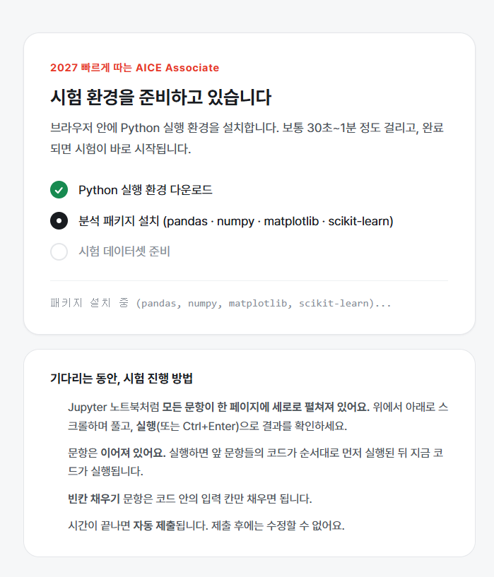
시험 시작 전 브라우저 안에 Python 실행 환경(pandas·numpy·scikit-learn)을 자동 설치하는 준비 화면
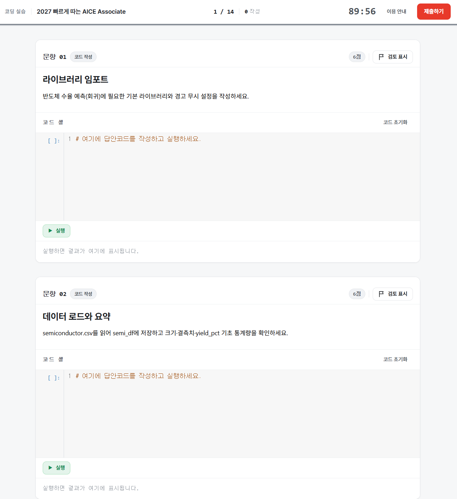
실제 시험과 동일한 Jupyter 노트북 형식의 코딩 실습 응시 화면. 문항별 코드 셀 실행, 남은 시간, 검토 표시 지원
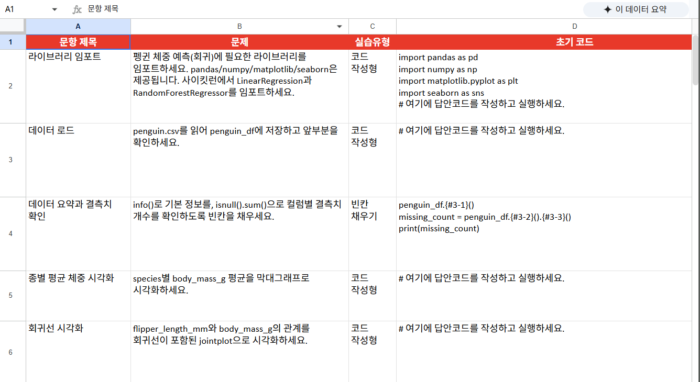
문항 제목·문제·실습유형(코드 작성형/빈칸 채우기)·초기 코드를 정리한 출제 관리 시트. 채점 키와 문항 구조를 함께 관리
05일하는 방식
-
되돌릴 수 있는 순서로 만듭니다
기획 → 원고 → 조판대조 → 1교 → 2교 → 3교 → 리파인. 단계마다 무엇을 확정하고 무엇을 열어둘지 정해 표준 편집 프로세스로 문서화했고, 사내 가이드로 쓰고 있습니다. -
일정은 마감일에서 거꾸로 잡습니다
인쇄·출간일을 기준으로 역산해 조판소·디자이너·마케터와 일정을 먼저 맞춘 뒤 편집 일정을 채웁니다. -
문제는 재현한 다음에 보고합니다
“동작이 이상하다”에서 넘기지 않고 파일의 셀 구조를 단위별로 분석해 원인을 특정합니다. 찾은 뒤에는 즉시 수정 → 기능 추가 → 구조 개선 3단계로 우선순위를 붙여 전달합니다. -
같은 실수가 반복되면 사람이 아니라 장치를 고칩니다
반복되는 수정 사항은 FAQ 문서로, 페이지마다 제각각이던 기준은 하나의 공용 로직으로, 분류 오류는 자동 검증 스크립트와 pre-commit lint로 막았습니다.